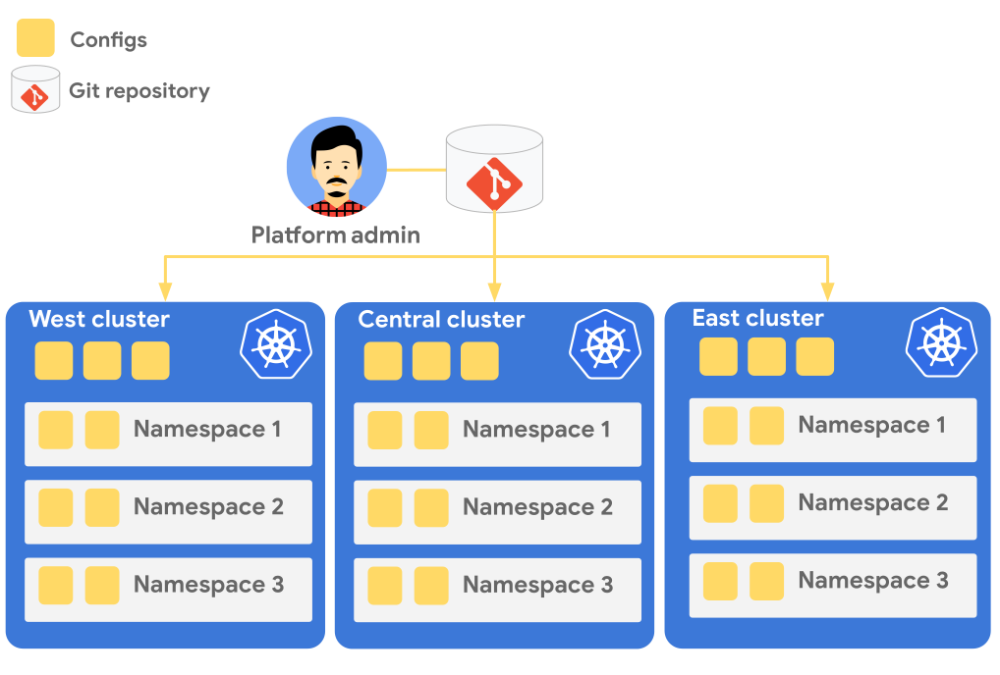

前提条件
ラボを開始する前に以下のものをあらかじめ準備してください。
- Google Cloud アカウント
- ラボ用の Google Cloud プロジェクト
- 有効な請求先アカウントに紐付いていることを確認してください
- ラボで作成したリソースをクリーンアップしやすいように新規プロジェクトの利用をおすすめします
- Cloud Shell
- このラボでは Cloud Shell での操作を前提にしています
- Cloud Shell 以外で操作する場合は下記の指示に従ってください。
Cloud Shell 以外での操作
Cloud Shell 以外で操作する場合は次のツールがインストールしてください。
また、ラボで使用する Cloud SDK コンポーネントをインストールしてください。
gcloud components install alpha beta kubectl nomos
このラボではグローバルに分散されたマイクロブログ アプリケーションを構築します。 また、各地域のクライアントからどのようにアクセスされるかを確認します。
アプリケーションとクライアントの外観を図にすると次のようになります。

このアプリケーションのアーキテクチャは以下の特徴があります。
- スケーラブル
- コンテナ化されていて Google Kubernetes Engine 上で実行されている
- データベースに Cloud Spanner を利用している
- 低レイテンシ
- GKE クラスタがアメリカ、ヨーロッパ、アジアに分散されていて、地理的に近いクラスタで処理できる
- Spanner のノードが各クラスタと同じリージョンにあり、高速にデータの読み取りができる
- 単一 IP アドレス
- 単一のエニーキャスト IP でのグローバルな負荷分散を実現するために Cloud Load Balancing を利用している
- 複数クラスタにまたがって分散するロードバランサを作成するために Multi Cluster Ingress を利用している
- GitOps
- 複数クラスタの管理を一元化するために GitOps を利用している
- GitOps を利用するために Config Sync を利用している
プロジェクトの設定
使用するプロジェクトを設定してください。
gcloud config set project YOUR-PROJECT
API の有効化
利用するサービスの API を有効化してください。
gcloud services enable \ anthos.googleapis.com \ container.googleapis.com \ gkehub.googleapis.com \ multiclusteringress.googleapis.com \ sourcerepo.googleapis.com \ spanner.googleapis.com
このセクションでは北アメリカ、ヨーロッパ、アジアのリージョンにそれぞれクラスタを1つずつ作成します。
us-central1 (アイオワ) にクラスタを作成してください。
gcloud container clusters create us \ --enable-ip-alias \ --machine-type e2-standard-2 \ --num-nodes 1 \ --workload-pool=$(gcloud config get-value project).svc.id.goog \ --region us-central1
europe-west1 (ベルギー) にクラスタを作成してください。
gcloud container clusters create europe \ --enable-ip-alias \ --machine-type e2-standard-2 \ --num-nodes 1 \ --workload-pool=$(gcloud config get-value project).svc.id.goog \ --region europe-west1
asia-east1 (台湾) にクラスタを作成してください。
gcloud container clusters create asia \ --enable-ip-alias \ --machine-type e2-standard-2 \ --num-nodes 1 \ --workload-pool=$(gcloud config get-value project).svc.id.goog \ --region asia-east1
kubectl コマンドのクラスタ コンテキストの名前を変更してください。
kubectl config rename-context \ gke_$(gcloud config get-value project)_us-central1_us \ mb-us kubectl config rename-context \ gke_$(gcloud config get-value project)_europe-west1_europe \ mb-europe kubectl config rename-context \ gke_$(gcloud config get-value project)_asia-east1_asia \ mb-asia
このセクションでは作成した GKE クラスタの設定を GitOps で一元管理できるように Config Sync を構成します。
Config Sync を利用すると Kubernetes クラスタの設定やポリシーを Git リポジトリで管理できます。 また、Git リポジトリを介さないクラスタへの変更を禁止することができるため、一貫したクラスタの管理が可能になります。

Anthos への登録
作成した GKE クラスタを Anthos へ登録してください。
gcloud beta container hub memberships register us \ --gke-cluster us-central1/us \ --enable-workload-identity gcloud beta container hub memberships register europe \ --gke-cluster europe-west1/europe \ --enable-workload-identity gcloud beta container hub memberships register asia \ --gke-cluster asia-east1/asia \ --enable-workload-identity
すべてのクラスタが登録されたことを確認してください。
gcloud beta container hub memberships list
Git リポジトリの作成
このラボでは Git リポジトリに Cloud Source Repositories を利用します。
config リポジトリを作成してください。
gcloud source repos create config
ローカルマシンにリポジトリをクローンしてください。
mkdir ~/workshop cd ~/workshop gcloud source repos clone config cd config
Config Sync 用に初期化してください。
nomos init
次のようなディレクトリとファイルが作成されます。
$ tree
.
├── README.md
├── cluster
├── clusterregistry
├── namespaces
└── system
├── README.md
└── repo.yaml
初期化したファイルをコミットしてプッシュしてください。
git checkout -b main git add . git commit -m "Initial commit" git push -u origin main
Config Sync がこのリポジトリのデータを取得できるように、Config Sync 用のサービスアカウントを作成して権限を付与してください。
gcloud iam service-accounts create config-sync gcloud projects add-iam-policy-binding \ $(gcloud config get-value project) \ --member serviceAccount:config-sync@$(gcloud config get-value project).iam.gserviceaccount.com \ --role roles/source.reader
Anthos Config Management の有効化
Anthos Config Management (ACM) は Anthos の主要サービスのひとつです。 Config Sync は ACM を構成するコンポーネントのひとつです。 このラボでは ACM のうち Config Sync のみを利用します。
Anthos Config Management を有効化してください。
gcloud alpha container hub config-management enable
Anthos Config Management Operator が作成したサービスアカウントを利用できるように権限を付与してください。
gcloud iam service-accounts add-iam-policy-binding \ --role roles/iam.workloadIdentityUser \ --member "serviceAccount:$(gcloud config get-value project).svc.id.goog[config-management-system/root-reconciler]" \ config-sync@$(gcloud config get-value project).iam.gserviceaccount.com
Config Sync の設定
各クラスタの作成した Git リポジトリと同期するように Config Sync を設定します。
setup ディレクトリに Config Sync のマニフェストを作成してください。
mkdir setup
cat <<EOF > setup/apply-spec.yaml
applySpecVersion: 1
spec:
configSync:
enabled: true
syncRepo: $(gcloud source repos describe config --format 'value(url)')
syncBranch: main
secretType: gcpserviceaccount
gcpServiceAccountEmail: config-sync@$(gcloud config get-value project).iam.gserviceaccount.com
EOF
各クラスタに設定を適用してください。
gcloud beta container hub config-management apply \ --membership us \ --config setup/apply-spec.yaml gcloud beta container hub config-management apply \ --membership europe \ --config setup/apply-spec.yaml gcloud beta container hub config-management apply \ --membership asia \ --config setup/apply-spec.yaml
各クラスタが正常に同期されているか確認してください。
gcloud beta container hub config-management status
Status が SYNCED になっていれば正常に同期されています。
ここまでの変更をコミットしてください。
git add . git commit -m "Configure Config Sync"
このセクションではマイクロブログ アプリケーションをデプロイします。 データベースとなる Cloud Spanner のインスタンスを作成して、Config Sync を利用してすべての GKE クラスタに microblog Deployment を作成します。
アプリケーションについて
利用する microblog はテスト用のサンプル アプリケーションです。 マイクロブログとしてのシンプルな HTTP の API を提供します。
マイクロブログ メッセージの取得
GET /api/messages ですべてのメッセージを取得できます。
$ curl http://$MICROBLOG_HOST/api/messages | jq
{
"server_zone": "asia-east1-b",
"messages": [
{
"id": "93efac34-9356-4af6-9223-375c0bd6c672",
"created_at": "2021-08-13T00:40:18.246548854Z",
"name": "Shawn",
"body": "client-asia-northeast1-c",
"written_at": "asia-east1-b"
},
{
"id": "f227ca14-73df-4fcb-8b3f-7587d27b3bf9",
"created_at": "2021-08-13T00:36:28.360528217Z",
"name": "Shawn",
"body": "client-europe-west6-c",
"written_at": "europe-west1-c"
},
{
"id": "241482c9-1638-4366-bc99-be9c96926ad9",
"created_at": "2021-08-13T00:33:38.181572564Z",
"name": "Shawn",
"body": "client-us-east1-c",
"written_at": "us-central1-f"
}
]
}
server_zone プロパティはこのリクエストを処理した Pod が起動している Kubernetes ノード (Compute Engine のインスタンス) のゾーンです。 server_zone プロパティを見ることでどのゾーンでリクエストが処理されたかを確認できます。
各メッセージの written_at プロパティはそのメッセージの書き込みを処理した Pod のゾーンです。
マイクロブログ メッセージの書き込み
POST /api/messages で新しいメッセージを投稿できます。
$ curl -X POST $ADDRESS/api/messages -d '{"name":"Shawn","body":"hello"}' | jq
{
"server_zone": "asia-east1-b",
"message": {
"id": "5543da95-e3ab-4ac9-a025-ca7925e0baa3",
"created_at": "2021-08-13T04:27:12.539542304Z",
"name": "Shawn",
"body": "hello",
"written_at": "asia-east1-b"
}
}
レスポンスには message プロパティに書き込まれたメッセージと、server_zone プロパティにリクエストを処理したゾーンが含まれています。 書き込みリクエストのserver_zoneとmessage.written_atは必ず一致します。
Cloud Spanner の準備
Cloud Spanner のインスタンスを作成してください。
gcloud spanner instances create microblog \ --config nam-eur-asia1 \ --description microblog \ --nodes 1
作成したインスタンスにアプリケーションで利用するデータベースとテーブルを作成してください。
gcloud spanner databases create microblog \ --instance microblog \ --ddl 'CREATE TABLE Messages ( MessageId STRING(36) NOT NULL, CreatedAt TIMESTAMP NOT NULL, Name STRING(MAX) NOT NULL, Body STRING(MAX) NOT NULL, WrittenAt STRING(MAX) NOT NULL, ) PRIMARY KEY (MessageId, CreatedAt DESC)'
このインスタンスにアクセスするためのサービスアカウントを作成して権限を付与してください。
gcloud iam service-accounts create microblog gcloud spanner instances add-iam-policy-binding microblog \ --member serviceAccount:microblog@$(gcloud config get-value project).iam.gserviceaccount.com \ --role roles/spanner.databaseUser
アプリケーションのデプロイ
アプリケーションはすべての GKE クラスタに Deployment としてデプロイします。 必要なマニフェストの YAML ファイルを作成して Git リポジトリにプッシュすることで、Config Sync によりすべてのクラスタに Deployment が同期されます。
デプロイ先の Namespace のマニフェストを作成してください。
mkdir namespaces/microblog cat <<EOF > namespaces/microblog/namespace.yaml apiVersion: v1 kind: Namespace metadata: name: microblog EOF
アプリケーションの Pod で利用する Kubernetes サービスアカウントのマニフェストを作成してください。
cat << EOF > namespaces/microblog/service-account.yaml
apiVersion: v1
kind: ServiceAccount
metadata:
namespace: microblog
name: microblog
annotations:
iam.gke.io/gcp-service-account: microblog@$(gcloud config get-value project).iam.gserviceaccount.com
EOF
アプリケーションの Deployment のマニフェストを作成してください。
cat <<EOF > namespaces/microblog/deployment.yaml
apiVersion: apps/v1
kind: Deployment
metadata:
namespace: microblog
name: microblog
labels:
app: microblog
spec:
replicas: 1
selector:
matchLabels:
app: microblog
template:
metadata:
labels:
app: microblog
spec:
containers:
- name: microblog
image: ghcr.io/shawnlabo/microblog:latest
imagePullPolicy: Always
ports:
- containerPort: 8080
env:
- name: DATABASE
value: projects/$(gcloud config get-value project)/instances/microblog/databases/microblog
livenessProbe:
httpGet:
path: /liveness
port: 8080
initialDelaySeconds: 10
periodSeconds: 10
readinessProbe:
httpGet:
path: /readiness
port: 8080
initialDelaySeconds: 3
periodSeconds: 3
serviceAccountName: microblog
EOF
変更をコミットしてプッシュしてください。
git add .
git commit -m "Add microblog"
git push
変更が正常に同期されているか確認してください。
gcloud beta container hub config-management status
Workload Identity により microblog Kubernetes サービスアカウントが microblog Google サービスアカウントの機能を利用できるように権限を付与してください。
gcloud iam service-accounts add-iam-policy-binding \ microblog@$(gcloud config get-value project).iam.gserviceaccount.com \ --role roles/iam.workloadIdentityUser \ --member "serviceAccount:$(gcloud config get-value project).svc.id.goog[microblog/microblog]"
すべてのクラスタに Deployment が作成されていることを確認してください。
kubectl config use-context mb-us kubectl get deployment -n microblog kubectl config use-context mb-europe kubectl get deployment -n microblog kubectl config use-context mb-asia kubectl get deployment -n microblog
このセクションでは Multi Cluster Ingress により、複数のクラスタにまたがるロードバランサを作成します。 これにより、単一の IP アドレスへのリクエストを最も近いリージョンの GKE クラスタで処理できます。

構成クラスタ の設定
Multi Cluster Ingress では、MultiClusterService リソースと MultiClusterIngress リソースによってロードバランサを構成します。 これらは複数クラスタにまたがるネットワークやロードバランサを構成するためのリソースですが、リソース自体はひとつのクラスタのみにデプロイします。 これにより、複数クラスタに関わるリソースを一元的に管理できます。 また、これらのリソースを一元的に管理するクラスタを構成クラスタ (Config Cluster)と呼びます。

構成クラスタの役割は分散先のクラスタが担うことも可能です。 このラボでは us-central1 リージョンに作成した us クラスタを構成クラスタとします。
ClusterSelector の作成
MultiClusterService と MultiClusterIngress を作成する前に、これらのリソースが構成クラスタのみに同期されるように ClusterSelector を作成します。 ClusterSelector を使うことで、マニフェストを特定のクラスタのみに適用することが可能になります。
us クラスタに config: true というラベルを設定するための Cluster マニフェストを作成してください。
cat << EOF > clusterregistry/us.yaml
apiVersion: clusterregistry.k8s.io/v1alpha1
kind: Cluster
metadata:
name: us
labels:
config: "true"
EOF
config: true というラベルを持つクラスタを選択するための ClusterSelector マニフェストを作成してください。
cat << EOF > clusterregistry/config-cluster-selector.yaml
apiVersion: configmanagement.gke.io/v1
kind: ClusterSelector
metadata:
name: config-cluster-selector
spec:
selector:
matchLabels:
config: "true"
EOF
変更をコミットしてプッシュしてください。
git add . git commit -m "Add ClusterSelector for Config Cluster" git push
Multi Cluster Ingress の作成
マイクロブログ アプリケーションを公開するための MultiClusterService と MultiClusterIngress を作成します。
Multi Cluster Ingress の機能を有効化してください。
gcloud beta container hub ingress enable \ --config-membership=projects/$(gcloud config get-value project)/locations/global/memberships/us
ロードバランサで利用する IP アドレスを作成してください。
gcloud compute addresses create microblog --global
MultiClusterService を作成してください。
cat << EOF > namespaces/microblog/multi-cluster-service.yaml
apiVersion: networking.gke.io/v1
kind: MultiClusterService
metadata:
namespace: microblog
name: microblog
annotations:
configmanagement.gke.io/cluster-selector: config-cluster-selector
spec:
template:
spec:
selector:
app: microblog
ports:
- name: web
protocol: TCP
port: 8080
targetPort: 8080
EOF
MultiClusterIngress を作成してください。
cat << EOF > namespaces/microblog/multi-cluster-ingress.yaml
apiVersion: networking.gke.io/v1
kind: MultiClusterIngress
metadata:
namespace: microblog
name: microblog
annotations:
configmanagement.gke.io/cluster-selector: config-cluster-selector
networking.gke.io/static-ip: $(gcloud compute addresses describe microblog --global --format 'value(address)')
spec:
template:
spec:
backend:
serviceName: microblog
servicePort: 8080
EOF
変更をコミットしてプッシュしてください。
git add .
git commit -m "Expose microblog with Multi Cluster Ingress"
git push
MultiClusterIngress が作成されたことを確認してください。
kubectl config use-context mci-us
kubectl describe mci microblog -n microblog
このセクションでは構築したアプリケーションが正常に動作していることを確認します。
まず、Cloud Shell からマイクロブログが利用できることを確認します。 次に、各地域に Compute Engine のインスタンスを作成して、最も地理的に近い GKE クラスタで処理が行われていることを確認します。
Cloud Shell からの確認
Cloud Shell または作業に利用しているマシンからマイクロブログ API を利用します。
IP アドレスを環境変数に格納してください。
ADDRESS=$(gcloud compute addresses describe microblog --global --format 'value(address)')
新しいメッセージを投稿してください。 名前やメッセージ本文は自由に変更してください。
curl -is -X POST $ADDRESS/api/messages \
-d "{\"name\":\"Your name\",\"body\":\"Your first message\"}"
すべてのメッセージを取得してください。
curl -is $ADDRESS/api/messages
投稿したメッセージが取得できることを確認してください。
us-central1 から確認
us-central1 に Compute Engine のインスタンスを作成して、そのインスタンスからメッセージを投稿します。
インスタンスを作成してください。
gcloud compute instances create client-us-central1-c --zone us-central1-c
メッセージを投稿してください。メッセージ本文にゾーンを含めると確認しやすくなります。
gcloud compute ssh client-us-central1-c \
--zone us-central1-c \
--command "curl -s -X POST $ADDRESS/api/messages -X POST -d '{\"name\":\"Your name\",\"body\":\"Your message from client-us-central1-c\"}'" | jq
すべてのメッセージを取得してください。
gcloud compute ssh client-us-central1-c \ --zone us-central1-c \ --command "curl -s $ADDRESS/api/messages" | jq
投稿したメッセージが取得できることを確認してください。 また、server_zone プロパティや各メッセージの written_at を確認してください。
様々な地域からの確認
様々な地域からリクエストを送って、最も近いクラスタで処理されることを確認します。
簡単にインスタンスの作成とメッセージの投稿・取得ができるようにスクリプトを作成してください。
cat << 'EOF' > test.sh
#!/bin/bash -x
address=$(gcloud compute addresses describe microblog --global --format 'value(address)')
zone=$1
instance=client-$zone
if ! gcloud compute instances describe $instance --zone $zone > /dev/null 2>&1; then
:
: Instance $instance does not exist. Creating...
:
gcloud compute instances create $instance --zone $zone
sleep 10
fi
:
: ================
: Post message from $zone
gcloud compute ssh $instance --zone $zone --command "curl -s -X POST $address/api/messages -d '{\"name\":\"$USER\",\"body\":\"message from $instance\"}'" | jq
:
:
: ================
: Get messages from $zone
gcloud compute ssh $instance --zone $zone --command "curl -s $address/api/messages" | jq
EOF
chmod +x test.sh
スクリプトを使って、以下のゾーンのインスタンスを作成してメッセージを投稿・確認してください。
./test.sh us-east1-c # サウスカロライナ ./test.sh europe-west6-c # チューリッヒ ./test.sh asia-northeast1-c # 東京
以上でこのラボは終了です。おつかれさまでした。
作成したリソースのクリーンアップを忘れないようにしてください。 ラボ用のプロジェクトを作成した場合は、プロジェクトごと削除してください。